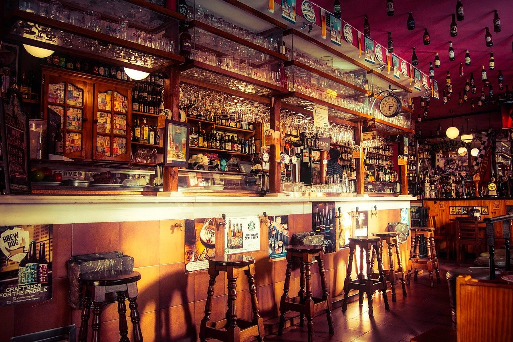
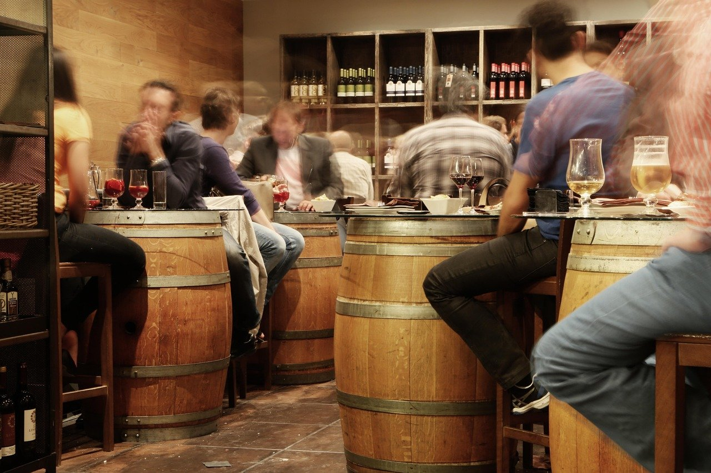
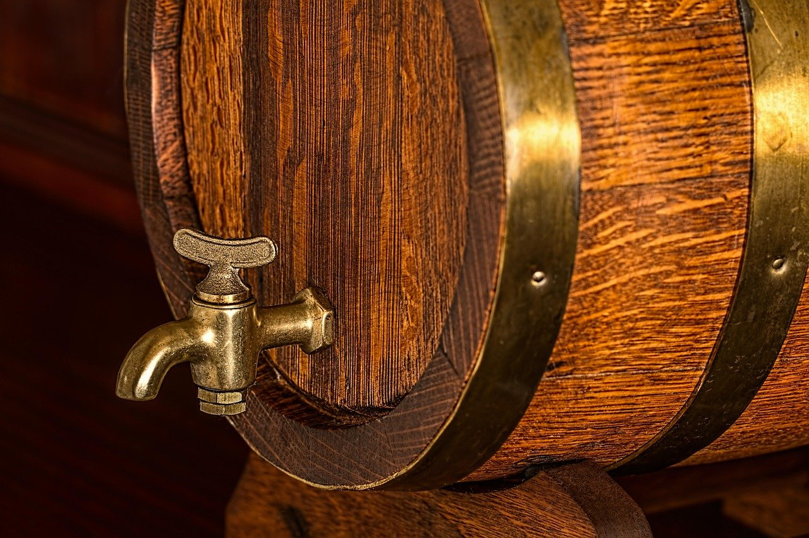

Pub în zona Pieței Muzeului, Cluj-Napoca
KlausenPubhouse
Pe strada Georges Clemenceau 1, la câțiva pași de Piața Muzeului. Deschis în fiecare zi, de la 08:00 până la miezul nopții.


Lângă Piața Muzeului, pe Clemenceau
Klausen Pubhouse se află pe strada Georges Clemenceau, în zona Pieței Muzeului din Cluj-Napoca. Poți trece dimineața, după program sau seara târziu, pentru că pubul e deschis zilnic până la miezul nopții.
Rezervările se fac prin telefon sau cu un mesaj pe rețelele sociale.
- Zonă centrală
- Strada Georges Clemenceau 1, aproape de Piața Muzeului.
- Program lung
- Deschis 16 ore pe zi, de la 8 dimineața la 12 noaptea.
- Rezervare rapidă
- Prin telefon sau prin mesaj pe rețelele sociale.
- Piața Muzeului
- Strada Georges Clemenceau 1
- Deschis zilnic între 08:00 și 24:00
- Rezervări la 0727 843 782
- Cluj-Napoca
Servicii
Vii cu prietenii la o masă în pub. Dacă sunteți mai mulți sau veniți la o oră aglomerată, rezervă dinainte.
-
Consumație la pub
Te așezi la o masă și comanzi de băut, oricând între 08:00 și 24:00, în zona Pieței Muzeului.
-
Rezervare prin telefon
Suni la 0727 843 782 și spui pentru câte persoane și la ce oră vrei masa.
Sună acum -
Rezervare pe rețelele sociale
Trimiți un mesaj pe rețelele sociale ale pubului cu ziua, ora și numărul de persoane.
Seara, la Klausen
Fotografii ilustrative. Apasă pe o imagine ca să o vezi mare.



Te așteptăm pe Clemenceau
- Adresă
- Strada Georges Clemenceau 1, Cluj-Napoca
- Program
- Deschis zilnic între 08:00 și 24:00
- Telefon pentru rezervări
- 0727 843 782